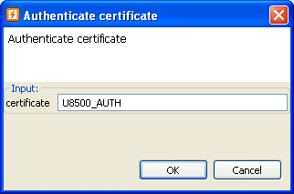

Authenticate with certificate will authenticate you throw signserver on connected equipment.
Please make sure the preferences are correctly configured as described in Flash Kit Preferences. Also make sure that:

Execute the Authenticate certificate task by:
The following dialog will pop-up and user must fill in correct CERTIFICATE in order to start Authenticate certificate task.
